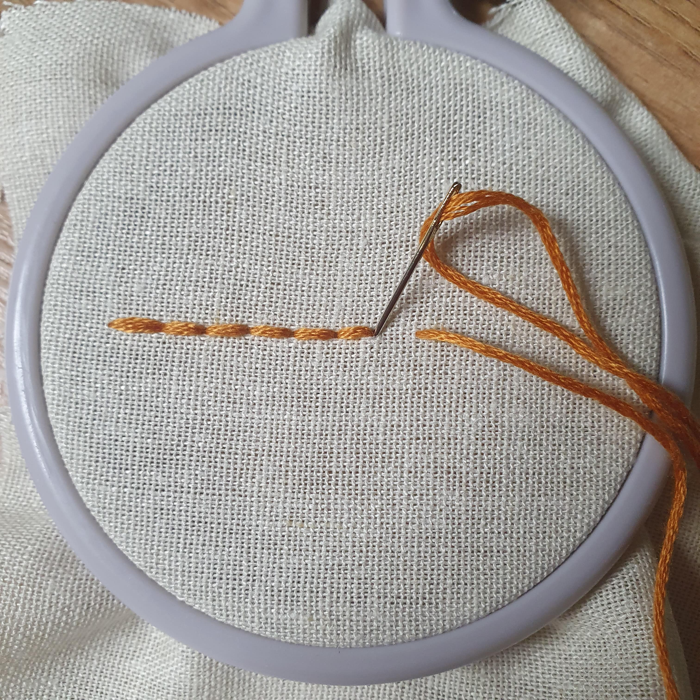
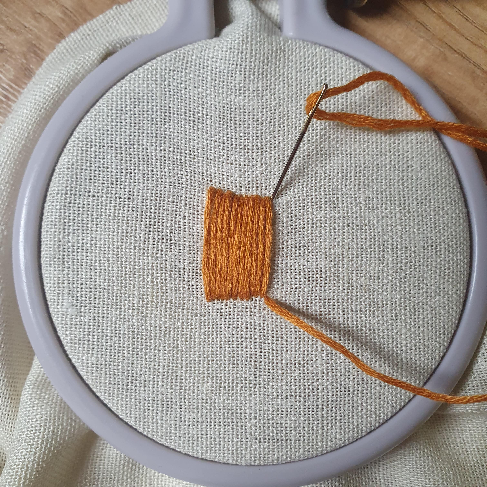
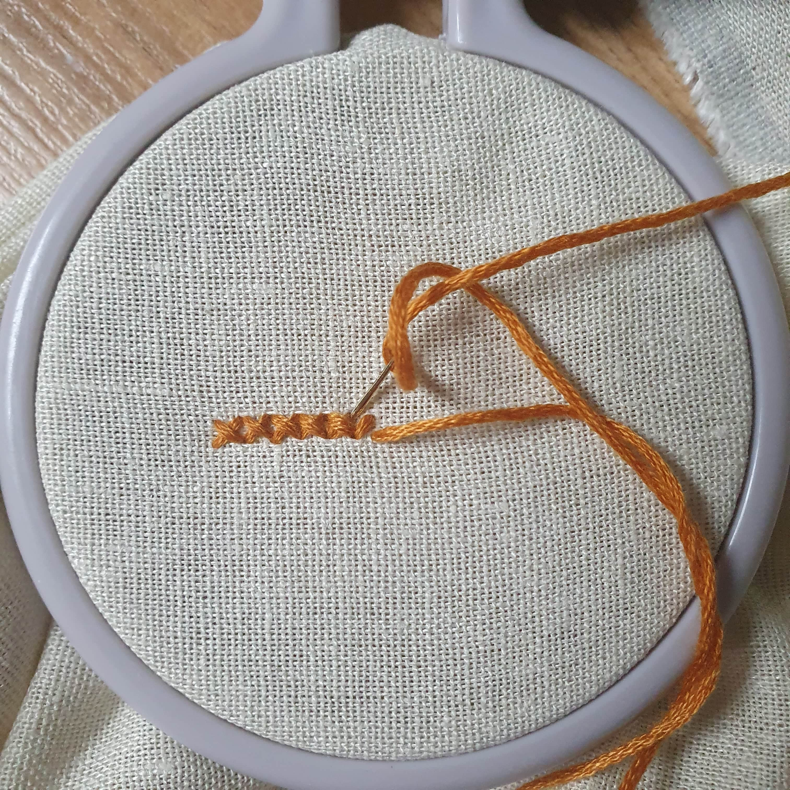
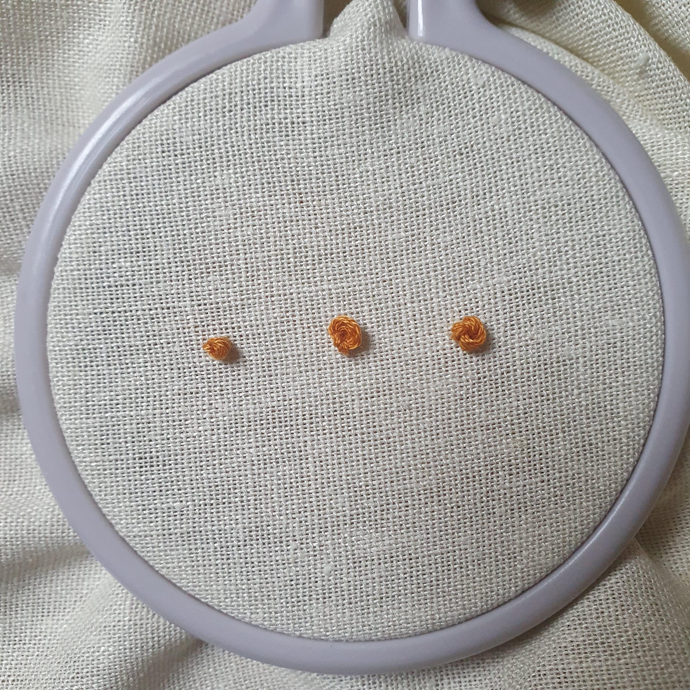
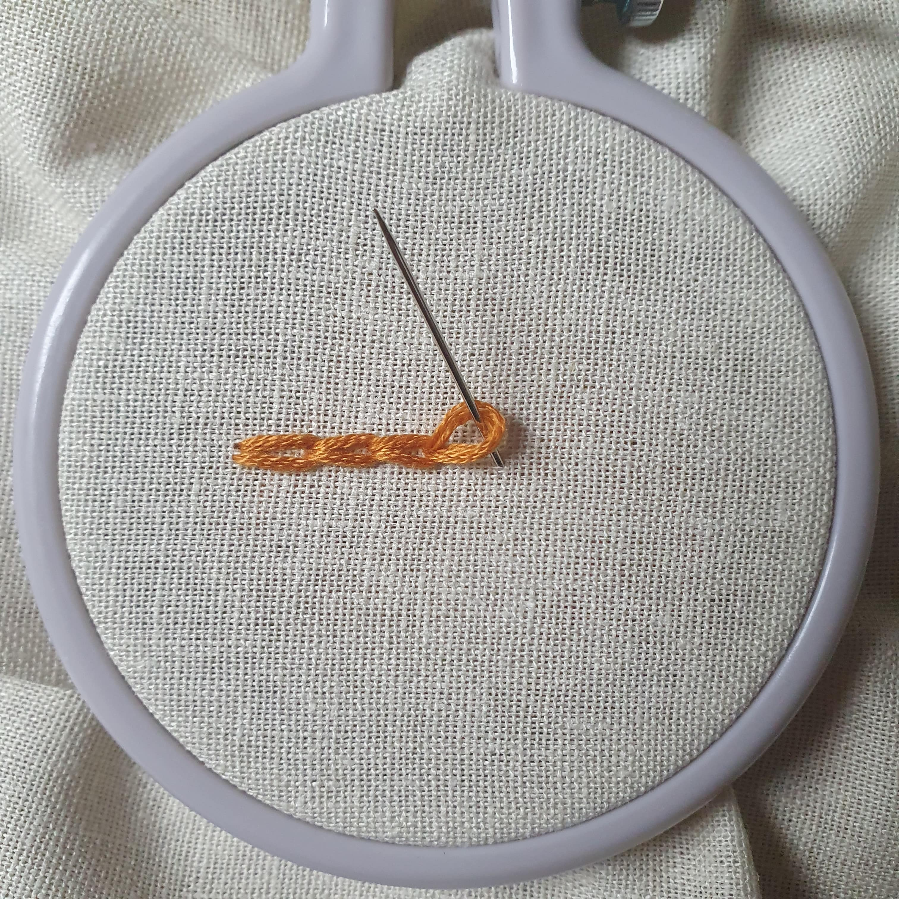

Podstawowe ściegi
Ścieg stębnowy
Stębnówka (ang. backstitch) - wbijamy igłę z tyłu materiału i robimy krótką, prostą kreskę. Następnie w równej odległości przebijamy się od spodu i wbijamy igłę w miejsce, w którym kończy się widoczna nić.
Haft satynowy
Z angielskiego satin stitch - używany głównie do wypełniania równomiernie powierzchni. Należy bardzo blisko, równolegle od siebie kłaść kolejne ściegi.
Haft krzyżykowy
Polega na robieniu rzędów krzyżyków obok siebie.
Węzełek
French knots to chyba najbardziej znienawidzony haft przez hobbystów, wymaga dużo wprawy. Po przebiciu się przez materiał, owijamy kilkukrotnie mulinę wokół igły (w zależności od tego, jak duże supełki chcemy uzyskać) i wbijamy się spowrotem w to samo miejsce.
Ścieg łańcuszkowy
Aby go wykonać, należy przeciągnąć nić od spodu i wbić spowrotem tuż obok. Nie naciągamy nici od razu, gdy utworzy się wystarczające oczko przebijamy ponownie igłę kawałek dalej od spodu tworząc pierwszy "łancuch".
